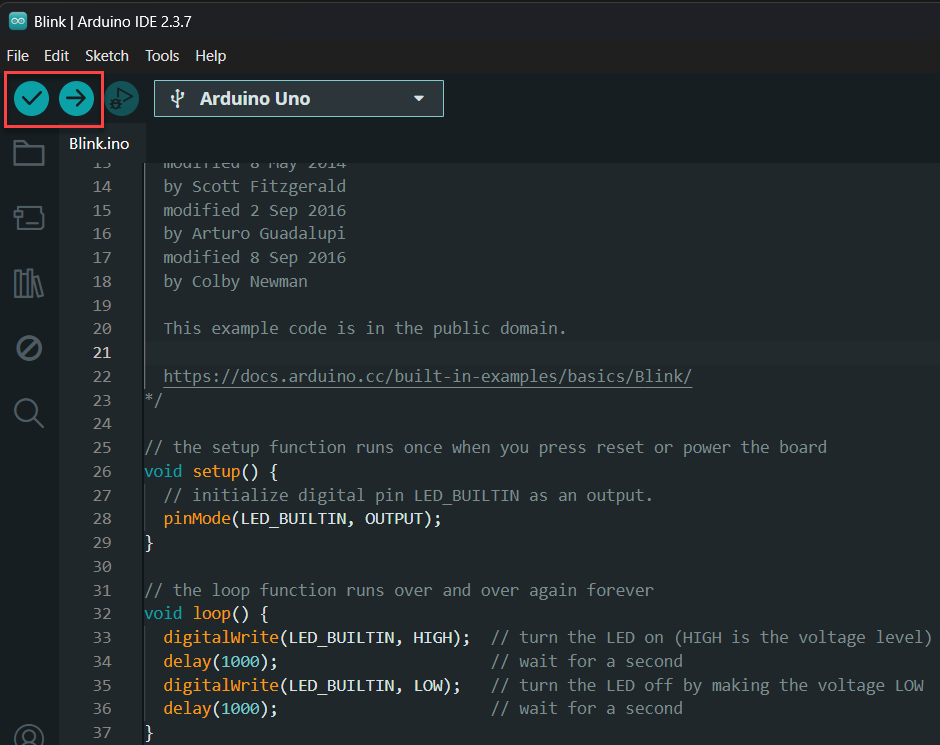
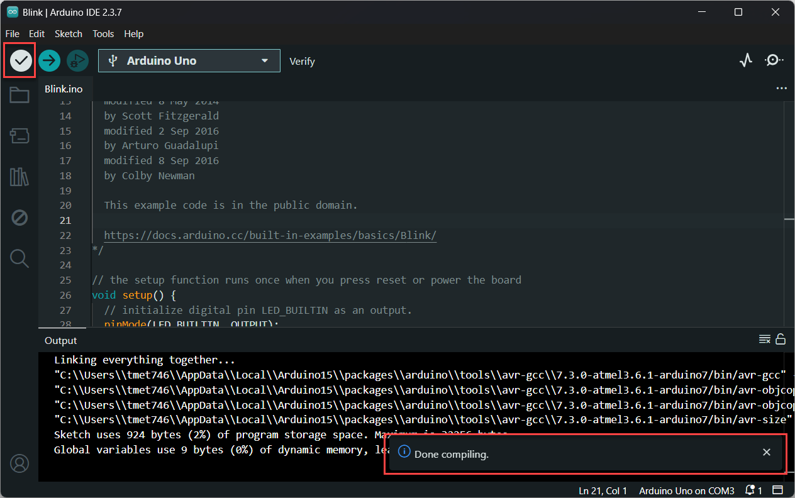
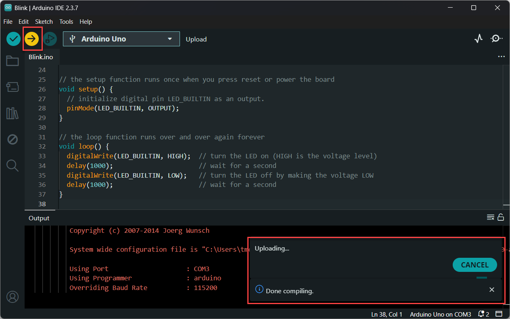

Een programma uploaden
- Open de Arduino IDE.
- Verbind de Arduino via de USB-kabel met je computer.
- Als je klikt op Select board, dan zou je jouw Arduino in het lijstje moeten zien.

De Arduino verschijnt in het lijstje onder Select board. - Als je klikt op Verify (linkse knop) dan wordt de code gecompileerd.

Als Verify gelukt is zonder fouten dan krijg je de boodschap Done compiling.
Als Verify niet lukt dan krijg je de boodschap Compilation error en ga je zelf op zoek moeten gaan naar de syntaxfout.
- Meestal ga je de moeite niet doen om op Verify te klikken en wil je gewoon Uploaden naar de Arduino om meteen te testen.
De Upload knop gaat eerst een Verify uitvoeren om zeker te zijn dat er geen syntaxfouten in het programma zitten en de Arduino voldoende geheugen heeft om je programma op te slaan en uit te voeren.
In het Output window zie je misschien rode tekst maar dat is niet noodzakelijk een foutmelding.